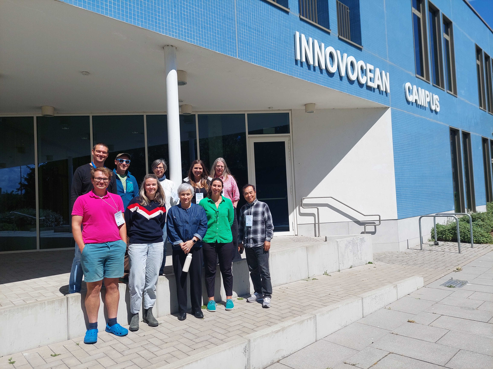

Events

Community meetings
2026-09SOCOMv2 presenting new results at the ICOS Science Conference 2026SOCOMv2
2026-06, Ostend
Observing System Simulation Experiments — SOCOMv2
SOCOMv2
SOCOMv2 presented OSSE results on sfCO₂ reconstructions and air–sea CO₂ flux estimates at the Ocean Carbon Observing Design Workshop in Ostend. The experiments evaluated sampling-mask configurations and network performance, supporting discussions on an optimal surface ocean pCO₂ observing design for WMO G3W requirements and informing next steps for SOCOMv2.

2026-02, Glasgow
SOCOMv2 dinner — Ocean Sciences Meeting 2026
SOCOMv2
SOCOMv2 members met for a dinner during the Ocean Sciences Meeting 2026 in Glasgow.
2023SOCOMv2 launched as a coordinated multi-experiment frameworkSOCOMv2
2015-09, KielSOCAT-SOCOM side event, SOLAS MeetingSOCOM
2015-02, TsukubaSOCOM progress workshopSOCOM
2014-06, BergenSOCOM progress discussion, IMBER MeetingSOCOM
2013-06, BeijingSOCOM kick-off meetingSOCOM